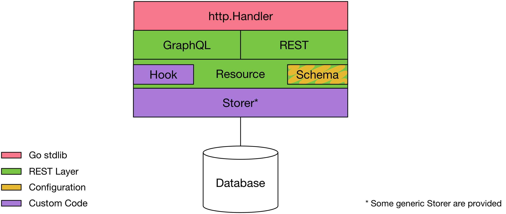

REST APIs made easy.


REST Layer is an API framework heavily inspired by the excellent Python Eve. It helps you create a comprehensive, customizable, and secure REST (graph) API on top of pluggable backend storages with no boiler plate code so you can focus on your business logic.
Implemented as a net/http handler, it plays well with standard middleware like CORS. It is also net/context aware thanks to xhandler. This allows deadline management to be supported down to the storage and permit an easy extensibility by passing custom data between layers of the framework.
REST Layer is an opinionated framework. Unlike many API frameworks, you don't directly control the routing and you don't have to write handlers. You just define resources and sub-resources with a schema, the framework automatically figures out what routes need to be generated behind the scene. You don't have to take care of the HTTP headers and response, JSON encoding, etc. either. REST layer handles HTTP conditional requests, caching, integrity checking for you.
A powerful and extensible validation engine make sure that data comes pre-validated to your custom storage handlers. Generic resource handlers for MongoDB, ElastiSearch and other databases are also available so you have few to no code to write to get up and running.
Moreover, REST Layer let you create a graph API by linking resources between them. Thanks to its advanced field selection syntax or GraphQL support, you can gather resources and their dependencies in a single request, saving you from costly network roundtrips.
The REST Layer framework is composed of several sub-packages:

| Package | Coverage | Description |
|---|---|---|
| rest | A net/http handler to expose a RESTful API. |
|
| graphql | A net/http handler to expose your API using the GraphQL protocol. |
|
| schema | A validation framework for the API resources. | |
| resource | Defines resources, manages the resource graph and manages the interface with resource storage handler. |
net/http middlewareAs REST Layer is a simple net/http handler. You can use standard middleware to extend its functionalities:
package main
import (
"log"
"net/http"
"github.com/rs/rest-layer-mem"
"github.com/rs/rest-layer/resource"
"github.com/rs/rest-layer/rest"
"github.com/rs/rest-layer/schema"
)
var (
// Define a user resource schema
user = schema.Schema{
Description: `The user object`,
Fields: schema.Fields{
"id": {
Required: true,
// When a field is read-only, on default values or hooks can
// set their value. The client can't change it.
ReadOnly: true,
// This is a field hook called when a new user is created.
// The schema.NewID hook is a provided hook to generate a
// unique id when no value is provided.
OnInit: schema.NewID,
// The Filterable and Sortable allows usage of filter and sort
// on this field in requests.
Filterable: true,
Sortable: true,
Validator: &schema.String{
Regexp: "^[0-9a-v]{20}$",
},
},
"created": {
Required: true,
ReadOnly: true,
Filterable: true,
Sortable: true,
OnInit: schema.Now,
Validator: &schema.Time{},
},
"updated": {
Required: true,
ReadOnly: true,
Filterable: true,
Sortable: true,
OnInit: schema.Now,
// The OnUpdate hook is called when the item is edited. Here we use
// provided Now hook which just return the current time.
OnUpdate: schema.Now,
Validator: &schema.Time{},
},
// Define a name field as required with a string validator
"name": {
Required: true,
Filterable: true,
Validator: &schema.String{
MaxLen: 150,
},
},
},
}
// Define a post resource schema
post = schema.Schema{
Description: `Represents a blog post`,
Fields: schema.Fields{
// schema.*Field are shortcuts for common fields
// (identical to users' same fields)
"id": schema.IDField,
"created": schema.CreatedField,
"updated": schema.UpdatedField,
// Define a user field which references the user owning the post.
// See bellow, the content of this field is enforced by the fact
// that posts is a sub-resource of users.
"user": {
Required: true,
Filterable: true,
Validator: &schema.Reference{
Path: "users",
},
},
"published": {
Required: true,
Filterable: true,
Validator: &schema.Bool{},
},
"title": {
Required: true,
Validator: &schema.String{
MaxLen: 150,
},
},
"body": {
// Dependency defines that body field can't be changed if
// the published field is not "false".
Dependency: schema.Q(`{"published": false}`),
Validator: &schema.String{
MaxLen: 100000,
},
},
},
}
)
func main() {
// Create a REST API resource index
index := resource.NewIndex()
// Add a resource on /users[/:user_id]
users := index.Bind("users", user, mem.NewHandler(), resource.Conf{
// We allow all REST methods
// (rest.ReadWrite is a shortcut for []resource.Mode{resource.Create,
// resource.Read, resource.Update, resource.Delete, resource,List})
AllowedModes: resource.ReadWrite,
})
// Bind a sub resource on /users/:user_id/posts[/:post_id]
// and reference the user on each post using the "user" field of the posts resource.
users.Bind("posts", "user", post, mem.NewHandler(), resource.Conf{
// Posts can only be read, created and deleted, not updated
AllowedModes: []resource.Mode{resource.Read, resource.List,
resource.Create, resource.Delete},
})
// Create API HTTP handler for the resource graph
api, err := rest.NewHandler(index)
if err != nil {
log.Fatalf("Invalid API configuration: %s", err)
}
// Bind the API under /api/ path
http.Handle("/api/", http.StripPrefix("/api/", api))
// Serve it
log.Print("Serving API on http://localhost:8080")
if err := http.ListenAndServe(":8080", nil); err != nil {
log.Fatal(err)
}
}
Just run this code (or use the provided examples/demo):
> go run examples/demo/main.go
2015/07/27 20:54:55 Serving API on http://localhost:8080
Using HTTPie, you can now play with your API.
First create a user:
http POST :8080/api/users name="John Doe"
HTTP/1.1 201 Created
Content-Length: 155
Content-Location: /api/users/ar6ejgmkj5lfl98r67p0
Content-Type: application/json
Date: Mon, 27 Jul 2015 19:10:20 GMT
Etag: "1e18e148e1ff3ecdaae5ec03ac74e0e4"
Last-Modified: Mon, 27 Jul 2015 19:10:20 GMT
Vary: Origin
{
"id": "ar6ejgmkj5lfl98r67p0",
"created": "2015-07-27T21:10:20.671003126+02:00",
"updated": "2015-07-27T21:10:20.671003989+02:00",
"name": "John Doe",
}
As you can see, the id, created and updated fields have been automatically generated by our OnInit field hooks.
Also notice the Etag and Last-Modified headers. Those guys allow data integrity and concurrency control down to the storage layer through the use of the If-Match and If-Unmodified-Since headers. They can also serve for conditional requests using If-None-Match and If-Modified-Since headers.
Here is an example of conditional request:
http :8080/api/users/ar6ejgmkj5lfl98r67p0 \
If-Modified-Since:"Mon, 27 Jul 2015 19:10:20 GMT"
HTTP/1.1 304 Not Modified
Date: Mon, 27 Jul 2015 19:17:11 GMT
Vary: Origin
And here is a data integrity request following the RFC-5789 recommendations:
http PATCH :8080/api/users/ar6ejgmkj5lfl98r67p0 \
name="Someone Else" If-Match:invalid-etag
HTTP/1.1 412 Precondition Failed
Content-Length: 58
Content-Type: application/json
Date: Mon, 27 Jul 2015 19:33:27 GMT
Vary: Origin
{
"code": 412,
"fields": null,
"message": "Precondition Failed"
}
Retry with the valid etag:
http PATCH :8080/api/users/ar6ejgmkj5lfl98r67p0 \
name="Someone Else" If-Match:'"1e18e148e1ff3ecdaae5ec03ac74e0e4"'
HTTP/1.1 200 OK
Content-Length: 159
Content-Type: application/json
Date: Mon, 27 Jul 2015 19:36:19 GMT
Etag: "7bb7a71b0f66197aa07c4c8fc9564616"
Last-Modified: Mon, 27 Jul 2015 19:36:19 GMT
Vary: Origin
{
"created": "2015-07-27T21:33:09.168492448+02:00",
"id": "ar6ejmukj5lflde9q8bg",
"name": "Someone Else",
"updated": "2015-07-27T21:36:19.904545093+02:00"
}
Note that even if you don't use conditional request, the Etag is always used by the storage handler to manage concurrency control between requests.
Another cool thing is sub-resources. We've set our posts resource as a child of the users resource. This way we can handle ownership very easily as routes are constructed as /users/:user_id/posts.
Lets create a post:
http POST :8080/api/users/ar6ejgmkj5lfl98r67p0/posts \
title="My first post"
HTTP/1.1 200 OK
Content-Length: 212
Content-Type: application/json
Date: Mon, 27 Jul 2015 19:46:55 GMT
Etag: "307ae92df6c3dd54847bfc7d72422e07"
Last-Modified: Mon, 27 Jul 2015 19:46:55 GMT
Vary: Origin
{
"id": "ar6ejs6kj5lflgc28es0",
"created": "2015-07-27T21:46:55.355857401+02:00",
"updated": "2015-07-27T21:46:55.355857989+02:00",
"title": "My first post",
"user": "ar6ejgmkj5lfl98r67p0"
}
Notice how the user field has been set with the user id provided in the route, that's pretty cool, huh?
We defined that we can create posts but we can't modify them, lets verify that:
http PATCH :8080/api/users/821d…/posts/ar6ejs6kj5lflgc28es0 \
private=true
HTTP/1.1 405 Method Not Allowed
Content-Length: 53
Content-Type: application/json
Date: Mon, 27 Jul 2015 19:50:33 GMT
Vary: Origin
{
"code": 405,
"fields": null,
"message": "Invalid method"
}
Let's list posts for that user now:
http :8080/api/users/ar6ejgmkj5lfl98r67p0/posts
HTTP/1.1 200 OK
Content-Length: 257
Content-Type: application/json
Date: Mon, 27 Jul 2015 19:51:46 GMT
Vary: Origin
X-Page: 1
X-Total: 1
[
{
"id": "ar6ejs6kj5lflgc28es0",
"_etag": "307ae92df6c3dd54847bfc7d72422e07",
"created": "2015-07-27T21:46:55.355857401+02:00",
"updated": "2015-07-27T21:46:55.355857989+02:00",
"title": "My first post",
"user": "ar6ejgmkj5lfl98r67p0"
}
]
Notice the added _etag field. This is to let you get etags of multiple items without having to GET each one of them throught individual requests.
Now, let's get user's information for each posts in a single request:
http :8080/api/users/ar6ejgmkj5lfl98r67p0/posts fields=='id,title,user{id,name}'
HTTP/1.1 200 OK
Content-Length: 257
Content-Type: application/json
Date: Mon, 27 Jul 2015 19:51:46 GMT
Vary: Origin
X-Page: 1
X-Total: 1
[
{
"id": "ar6ejs6kj5lflgc28es0",
"_etag": "307ae92df6c3dd54847bfc7d72422e07",
"created": "2015-07-27T21:46:55.355857401+02:00",
"updated": "2015-07-27T21:46:55.355857989+02:00",
"title": "My first post",
"user": {
"id": "ar6ejgmkj5lfl98r67p0",
"name": "John Doe"
}
}
]
Notice how we selected which fields we wanted in the result using the field selection query format. Thanks to sub-request support, the user name is included with each post with no additional HTTP request.
We can go even further and embed a sub-request list responses. Let's say we want a list of users with the last two posts:
http GET :8080/api/users fields='id,name,posts(limit:2){id,title}'
HTTP/1.1 201 Created
Content-Length: 155
Content-Location: /api/users/ar6ejgmkj5lfl98r67p0
Content-Type: application/json
Date: Mon, 27 Jul 2015 19:10:20 GMT
Etag: "1e18e148e1ff3ecdaae5ec03ac74e0e4"
Last-Modified: Mon, 27 Jul 2015 19:10:20 GMT
Vary: Origin
[
{
"id": "ar6ejgmkj5lfl98r67p0",
"name": "John Doe",
"posts": [
{
"id": "ar6ejs6kj5lflgc28es0",
"title": "My first post"
},
{
"id": "ar6ek26kj5lfljgh84qg",
"title": "My second post"
}
]
}
]
Sub-requests are executed concurrently whenever possible to ensure the fastest response time.
For REST Layer to be able to expose resources, you have to first define what fields the resource contains and where to bind it in the REST API URL namespace.
Resource field configuration is performed throught the schema package. A schema is a struct describing a resource. A schema is composed of metadata about the resource and a description of the allowed fields through a map of field name pointing to field definition.
Sample resource schema:
foo = schema.Schema{
Description: "A foo object"
Fields: schema.Fields{
"field_name": {
Required: true,
Filterable: true,
Validator: &schema.String{
MaxLen: 150,
},
},
},
}
Schema fields:
| Field | Description |
|---|---|
Description |
The description of the resource. This is used for API documentation. |
Fields |
A map of field name to field definition. |
The field definitions contains the following properties:
| Field | Description |
|---|---|
Required |
If true, the field must be provided when the resource is created and can't be set to null. The client may be able to omit a required field if a Default or a hook sets its content. |
ReadOnly |
If true, the field can not be set by the client, only a Default or a hook can alter its value. You may specify a value for a read-only field in your mutation request if the value is equal to the old value, REST Layer won't complain about it. This let your client to PUT the same document it has GET without having to take care of removing the read-only fields. |
Hidden |
Hidden allows writes but hides the field's content from the client. When this field is enabled, PUTing the document without the field would not remove the field but use the previous document's value if any. |
Default |
The value to be set when resource is created and the client didn't provide a value for the field. The content of this variable must still pass validation. |
OnInit |
A function to be executed when the resource is created. The function gets the current value of the field (after Default has been set if any) and returns the new value to be set. |
OnUpdate |
A function to be executed when the resource is updated. The function gets the current (updated) value of the field and returns the new value to be set. |
Params |
Params defines the list of parameters allowed for this field. See Field Parameters section for some examples. |
Handler |
Handler defines a function able to change the field's value depending on the passed parameters. See Field Parameters section for some examples. |
Validator |
A schema.FieldValidator to validate the content of the field. |
Dependency |
A query using filter format created with schema.Q(`{"field": "value"}`). If the query doesn't match the document, the field generates a dependency error. |
Filterable |
If true, the field can be used with the filter parameter. You may want to ensure the backend database has this field indexed when enabled. Some storage handlers may not support all the operators of the filter parameter, see their documentation for more information. |
Sortable |
If true, the field can be used with the sort parameter. You may want to ensure the backend database has this field indexed when enabled. |
Schema |
An optional sub schema to validate hierarchical documents. |
REST Layer comes with a set of validators. You can add your own by implementing the schema.FieldValidator interface. Here is the list of provided validators:
| Validator | Description |
|---|---|
| schema.String | Ensures the field is a string |
| schema.Integer | Ensures the field is an integer |
| schema.Float | Ensures the field is a float |
| schema.Bool | Ensures the field is a Boolean |
| schema.Array | Ensures the field is an array |
| schema.Dict | Ensures the field is a dict |
| schema.Time | Ensures the field is a datetime |
| schema.URL | Ensures the field is a valid URL |
| schema.IP | Ensures the field is a valid IPv4 or IPv6 |
| schema.Password | Ensures the field is a valid password and bcrypt it |
| schema.Reference | Ensures the field contains a reference to another existing API item |
| schema.AnyOf | Ensures that at least one sub-validator is valid |
| schema.AllOf | Ensures that at least all sub-validators are valid |
Some common hook handler to be used with OnInit and OnUpdate are also provided:
| Hook | Description |
|---|---|
schema.Now |
Returns the current time ignoring the input (current) value. |
schema.NewID |
Returns a unique identifier using xid if input value is nil. |
Some common field configuration are also provided as variables:
| Field Config | Description |
|---|---|
schema.IDField |
A required, read-only field with schema.NewID set as OnInit hook and a schema.String validator matching xid format. |
schema.CreatedField |
A required, read-only field with schema.Now set on OnInit hook with a schema.Time validator. |
schema.UpdatedField |
A required, read-only field with schema.Now set on OnInit and OnUpdate hooks with a schema.Time validator. |
schema.PasswordField |
A hidden, required field with a schema.Password validator. |
Here is an example of schema declaration:
// Define a post resource schema
post = schema.Schema{
Fields: schema.Fields{
// schema.*Field are shortcuts for common fields (identical to users' same fields)
"id": schema.IDField,
"created": schema.CreatedField,
"updated": schema.UpdatedField,
// Define a user field which references the user owning the post.
// See bellow, the content of this field is enforced by the fact
// that posts is a sub-resource of users.
"user": {
Required: true,
Filterable: true,
Validator: &schema.Reference{
Path: "users",
},
},
// Sub-documents are handled via a sub-schema
"meta": {
Schema: &schema.Schema{
Fields: schema.Fields{
"title": {
Required: true,
Validator: &schema.String{
MaxLen: 150,
},
},
"body": {
Validator: &schema.String{
MaxLen: 100000,
},
},
},
},
},
},
}
Now you just need to bind this schema at a specific endpoint on the resource.Index object:
index := resource.NewIndex()
posts := index.Bind("posts", post, mem.NewHandler(), resource.DefaultConf)
This tells the resource.Index to bind the post schema at the posts endpoint. The resource collection URL is then /posts and item URLs are /posts/<post_id>.
The resource.DefaultConf variable is a pre-defined resource.Conf type with sensible default. You can customize the resource behavior using a custom configuration.
The resource.Conf type has the following customizable properties:
| Property | Description |
|---|---|
AllowedModes |
A list of resource.Mode allowed for the resource. |
PaginationDefaultLimit |
If set, pagination is enabled by default with a number of item per page defined here. |
REST Layer handles mapping of HTTP methods to your resource URLs automatically. With REST, there is two kind of resource URL pathes: collection and item URLs. Collection URLs (/<resource>) are pointing to the collection of items while item URL (/<resource>/<item_id>) points to a specific item in that collection. HTTP methods are used to perform CRUDL operations on those resource.
You can easily dis/allow operation on a per resource basis using resource.Conf's AllowedModes property. The use of modes instead of HTTP methods in the configuration adds a layer of abstraction necessary to handle specific cases like PUT HTTP method performing a create if the specified item does not exist or a replace if it does. This gives you precise control of what you want to allow or not.
Modes are passed as configuration to resources as follow:
users := index.Bind("users", user, mem.NewHandler(), resource.Conf{
AllowedModes: []resource.Mode{resource.Read, resource.List, resource.Create, resource.Delete},
})
The following table shows how REST layer map CRUDL operations to HTTP methods and modes:
| Mode | HTTP Method | Context | Description |
|---|---|---|---|
Read |
GET | Item | Get an individual item by its ID. |
List |
GET | Collection | List/find items using filters and sorts. |
Create |
POST | Collection | Create an item letting the system generate its ID. |
Create |
PUT | Item | Create an item by choosing its ID. |
Update |
PATCH | Item | Partially modify the item following RFC-5789. |
Replace |
PUT | Item | Replace the item by a new on. |
Delete |
DELETE | Item | Delete the item by its ID. |
Clear |
DELETE | Collection | Delete all items from the collection matching the context and/or filters. |
Note on GraphQL support and modes: current implementation of GraphQL doesn't suport mutation. Thus only resources with Read and List modes will be exposed with GraphQL. Support for other modes will be added in the future.
Hooks are piece of code you can attach before or after an operation is performed on a resource. A hook is a Go type implementing one of the event handler interface below, and attached to a resource via the Resource.Use method.
| Hook Interface | Description |
|---|---|
| FindEventHandler | Defines a function called when the resource is listed with or without a query. Note that hook is called for both resource and item fetch as well a prior to updates and deletes. |
| FoundEventHandler | Defines a function called with the result of a find on resource. |
| GetEventHandler | Defines a function called when a get is performed on an item of the resource. Note: when multi-get is performed this hook is called for each items id individually. |
| GotEventHandler | Defines a function called with the result of a get on a resource. |
| InsertEventHandler | Defines a function called before an item is inserted. |
| InsertedEventHandler | Defines a function called after an item has been inserted. |
| UpdateEventHandler | Defines a function called before an item is updated. |
| UpdatedEventHandler | Defines a function called after an item has been updated. |
| DeleteEventHandler | Defines a function called before an item is deleted. |
| DeletedEventHandler | Defines a function called after an item has been deleted. |
| ClearEventHandler | Defines a function called before a resource is cleared. |
| ClearedEventHandler | Defines a function called after a resource has been cleared. |
All hooks functions get a context.Context as first argument. If a network call must be performed from the hook, the context's deadline must be respected. If a hook return an error, the whole request is aborted with that error.
You can also use the context to pass data to your hooks from a middleware executed before REST Layer. This can be used to manage authentication for instance. See examples/auth to see an example.
Sub resources can be used to express a one-to-may parent-child relationship between two resources. A sub-resource is automatically filtered by it's parent on the field specified as second argument of the Bind method.
To create a sub-resource, you bind you resource on the object returned by the binding of the parent resource. For instance, here we bind a comments resource to a posts resource:
posts := index.Bind("posts", post, mem.NewHandler(), resource.DefaultConf)
// Bind comment as sub-resource of the posts resource
posts.Bind("comments", "post", comment, mem.NewHandler(), resource.DefaultConf)
The second argument "post" defines the field in the comments resource that refers to the parent. This field must be present in the resource and the backend storage must support filtering on it. As a result, we get a new hierarchical route as follow:
/posts/:post_id/comments[/:comment_id]
When performing a GET on /posts/:post_id/comments, it is like adding the filter {"post":"<post_id>"} to the request to comments resource.
Additionally, thanks to REST Layer's embedding, this relationship can be embedded in the parent object as a sub-query:
/posts?fields=id,title,comments(limit=5,sort=-updated){id,user{id,name},message}
Here we would get all post with their respective 5 last comments embedded in the comments field of each post object with the user commenting to post embedded in each comment's sub-document:
[
{
"id": "abc",
"comments": [
{
"id": "def",
"user": {
"id": "ghi",
"name": "John Doe",
},
"message": "Last comment"
},
...
]
},
...
]
See embedding for more information.
Fields can depends on other fields in order to be changed. To configure dependency, set a filter on the Dependency property of the field using the schema.Q() method.
In this example, the body field can't be changed if the published field is not set to true:
post = schema.Schema{
Fields: schema.Fields{
"publishded": schema.Field{
Validator: &schema.Bool{},
},
"body": {
Dependency: schema.Q(`{"published": true}`),
Validator: &schema.String{},
},
},
}
To filter resources, you use the filter query-string parameter. The format of the parameter is inspired the MongoDB query format. The filter parameter can be used with GET and DELETE methods on collection URLs.
To use a resource field with the filter parameter, the field must be defined on the resource and the Filterable field property must be set to true. You may want to ensure the backend database has this field indexed when enabled.
To specify equality condition, use the query {<field>: <value>} to select all items with <field> equal <value>. REST Layer will complain with a 422 HTTP error if any field queried is not defined in the resource schema or is using an operator incompatible with field type (i.e.: $lt on a string field).
A query can specify conditions for more than one field. Implicitly, a logical AND conjunction connects the clauses so that the query selects the items that match all the conditions.
Using the the $or operator, you can specify a compound query that joins each clause with a logical OR conjunction so that the query selects the items that match at least one condition.
In the following example, the query document selects all items in the collection where the field quantity has a value greater than ($gt) 100 or the value of the price field is less than ($lt) 9.95:
{"$or": [{"quantity": {"$gt": 100}}, {"price": {"$lt": 9.95}}]}
Match on sub-fields is performed throught field path separated by dots. This example shows an exact match on the subfields country and city of the address sub-document:
{"address.country": "France", "address.city": "Paris"}
Some operators can change the type of match. For instance $in can be used to match a field against several values. For instance, to select all items with the type field equal either food or snacks, use the following query:
{"type": {"$in": ["food", "snacks"]}}
The opposite $nin is also available.
The following numeric comparisons operators are supported: $lt, $lte, $gt, $gte.
The $exists operator matches document containing the field, even if this field is null
{"type": {"$exists": true}}
You can invert the operator by passing false.
| Operator | Usage | Description |
|---|---|---|
$or |
{"$or": [{"a": "b"}, {"a": "c"}]} |
Join two clauses with a logical OR conjunction. |
$in |
{"a": {"$in": ["b", "c"]}} |
Match a field against several values. |
$nin |
{"a": {"$nin": ["b", "c"]}} |
Opposite of $in. |
$lt |
{"a": {"$lt": 10}} |
Fields value is lower than specified number. |
$lte |
{"a": {"$lte": 10}} |
Fields value is lower than or equal to the specified number. |
$gt |
{"a": {"$gt": 10}} |
Fields value is greater than specified number. |
$gte |
{"a": {"$gte": 10}} |
Fields value is greater than or equal to the specified number. |
$exists |
{"a": {"$exists": true}} |
Match if the field is present (or not if set to false) in the item, event if nil. |
Some storage handlers may not support all operators. Refer to the storage handler's documentation for more info.
Sorting is of resource items is defined throught the sort query-string parameter. The sort value is a list of resource's fields separated by comas (,). To invert a field's sort, you can prefix its name with a minus (-) character.
To use a resource field with the sort parameter, the field must be defined on the resource and the Sortable field property must be set to true. You may want to ensure the backend database has this field indexed when enabled.
Here we sort the result by ascending quantity and descending date:
/posts?sort=quantity,-created
REST APIs tend to grow over time. Resources get more and more fields to fulfill the needs for new features. But each time fields are added, all existing API clients automatically gets the additional cost. This tend to lead to huge wast of bandwidth and added latency due to the transfer of unnecessary data.
To workaround this issue, REST Layer provides a powerful fields selection (also named projection) system. If you provide the fields parameter with a list of fields for the resource you are interested in separated by comas, only those fields will be returned in the document:
$ http -b :8080/api/users/ar6eimekj5lfktka9mt0 fields=='id,name'
{
"id": "ar6eimekj5lfktka9mt0",
"name": "John Doe"
}
If your document has sub-fields, you can use brackets to select sub-fields:
$ http -b :8080/api/users/ar6eimekj5lfktka9mt0/posts fields=='meta{title,body}'
[
{
"_etag": "ar6eimukj5lfl07r0uv0",
"meta": {
"title": "test",
"body": "example"
}
}
]
It's also possible to rename fields in the response using aliasing. To create an alias, prefix the field name by the wanted alias separated by a colon (:):
$ http -b :8080/api/users/ar6eimekj5lfktka9mt0 fields=='id,name,n:name'
{
"id": "ar6eimekj5lfktka9mt0",
"n": "John Doe",
"name": "John Doe"
}
As you see, you can specify several time the same field. It's doesn't seem useful in this example, but with fields parameters, it becomes very powerful (see below).
Aliasing works with sub-fields as well:
$ http -b :8080/api/users/ar6eimekj5lfktka9mt0/posts fields=='meta{title,b:body}'
[
{
"_etag": "ar6eimukj5lfl07r0uv0",
"meta": {
"title": "test",
"b": "example"
}
}
]
Field parameters are used to apply a transformation on the value of a field using custom logic.
For instance, if you are using an on demand dynamic image resizer, you may want to expose the capability of this service, without requiring from the client to learn another URL based API. Wouldn't it be better if we could just ask the API to return the thumbnail_url dynamically transformed with the desired dimensions?
By combining field aliasing and field parameters, we can expose this resizer API as follow:
$ http -b :8080/api/videos fields=='id,
thumb_small_url:thumbnail_url(width:80,height:60),
thumb_large_url:thumbnail_url(width:800,height:600)'
[
{
"_etag": "ar6eimukj5lfl07r0uv0",
"thumb_small_url": "http://cdn.com/path/to/image-80w60h.jpg",
"thumb_large_url": "http://cdn.com/path/to/image-800w600h.jpg"
}
]
The example above show the same field represented twice but with some useful value transformations.
To add parameters on a field, use the Params property of the schema.Field type as follow:
schema.Schema{
Fields: schema.Fields{
"field": {
Params: schema.Params{
"width": {
Description: "Change the width of the thumbnail to the value in pixels",
Validator: schema.Integer{}
},
"height": {
Description: "Change the width of the thumbnail to the value in pixels",
Validator: schema.Integer{},
},
},
Handler: func(ctx context.Context, value interface{}, params map[string]interface{}) (interface{}, error) {
// your transformation logic here
return value, nil
},
},
},
}
Only parameters listed in the Params field will be accepted. You Handler function is called with the current value of the field and parameters sent by the user if any. Your function can apply wanted transformations on the value and return it. If an error is returned, a 422 error will be triggered with your error message associated to the field.
With sub-fields notation you can also request referenced resources or connections (sub-resources). REST Layer will recognize them automatically and fetch the associated resources in order embed their data in the response. This can save a lot of unnecessary sequential roundtrips:
$ http -b :8080/api/users/ar6eimekj5lfktka9mt0/posts \
fields=='meta{title},user{id,name},comments(sort:"-created",limit:10){user{id,name},body}'
[
{
"_etag": "ar6eimukj5lfl07r0uv0",
"meta": {
"title": "test"
},
"user": {
"id": "ar6eimul07lfae7r4b5l",
"name": "John Doe"
},
"comments": [
{
"user": {
"id": "ar6emul0kj5lfae7reimu",
"name": "Paul Wolf"
},
"body": "That's awesome!"
},
...
]
},
...
]
In the above example, the user field is a reference on the users resource. REST Layer did fetch the user referenced by the post and embedded the requested sub-fields (id and name). Same for comments: comments is set as a sub-resource of the posts resource. With this syntax, it's easy to get the last 10 comments on the post in the same REST request. For each of those comment, we asked to embed the user field referenced resource with id and name fields again.
Notice the sort and limit parameters passed to the comments field. Those are field parameter automatically exposed by connections to let you control the embedded list order, filter and pagination. You can use sort, filter, page and limit parameters with those field with the same syntax as their top level query-string parameter counterpart.
Such request can quickly generate a lot of queries on the storage handler. To ensure a fast response time, REST layer tries to coalesce those storage requests and to execute them concurrently whenever possible.
Pagination is supported on collection URLs using page and limit query-string parameters. If you don't define a default pagination limit using PaginationDefaultLimit resource configuration parameter, the resource won't be paginated until you provide the limit query-string parameter.
If your collections are large enough, failing to define a reasonable PaginationDefaultLimit parameter may quickly render your API unusable.
REST Layer doesn't provide any kind of support for authentication. Identifying the user is out of the scope of a REST API, it should be performed by an oAuth server. The oAuth endpoints could be either hosted on the same code base as your API or live in a different app. The recommended way to integrate oAuth or any other kind of authentication with REST Layer is through a signed token like JWT.
In this schema, the authentication service indentify the user and store data relevant to the user's identification in a JWT token. This token is sent to the API client as a bearer token, thru for instance the access-token query-string parameter or the Authorization HTTP header. A http middleware then decode and verify this token and extract user info from it, and stores it into the context. In REST layer, user info is now accessible from your resource hooks so you can change the query lookup or ensure mutated objects are owned by the user in order to handle the authorization part.
See the JWT auth example for more info.
Each stored resource provides information on the last time it was updated (Last-Modified), along with a hash value computed on the representation itself (ETag). These headers allow clients to perform conditional requests by using the If-Modified-Since header:
> http :8080/users/ar6ej4mkj5lfl688d8lg If-Modified-Since:'Wed, 05 Dec 2012 09:53:07 GMT'
HTTP/1.1 304 Not Modified
or the If-None-Match header:
$ http :8080/users/ar6ej4mkj5lfl688d8lg If-None-Match:'"1234567890123456789012345678901234567890"'
HTTP/1.1 304 Not Modified
API responses include a ETag header which also allows for proper concurrency control. An ETag is a hash value representing the current state of the resource on the server. Clients may choose to ensure they update (PATCH or PUT) or delete (DELETE) a resource in the state they know it by providing the last known ETag for that resource. This prevents overwriting items with obsolete data.
Consider the following workflow:
$ http PATCH :8080/users/ar6ej4mkj5lfl688d8lg If-Match:'"1234567890123456789012345678901234567890"' \
name='John Doe'
HTTP/1.1 412 Precondition Failed
What went wrong? We provided a If-Match header with the last known ETag, but it’s value did not match the current ETag of the item currently stored on the server, so we got a 412 Precondition Failed.
When this happen, it's up to the client to decide to inform the user of the error and/or refetch the latest version of the document to get the lattest ETag before retrying the operation.
$ http PATCH :8080/users/ar6ej4mkj5lfl688d8lg If-Match:'"80b81f314712932a4d4ea75ab0b76a4eea613012"' \
name='John Doe'
HTTP/1.1 200 OK
Etag: "7bb7a71b0f66197aa07c4c8fc9564616"
Last-Modified: Mon, 27 Jul 2015 19:36:19 GMT
This time the update operation has been accepted and we've got a new ETag for the updated resource.
Concurrency control header If-Match can be used with all mutation methods on item URLs: PATCH (update), PUT (replace) and DELETE (delete).
Data validation is provided out-of-the-box. Your configuration includes a schema definition for every resource managed by the API. Data sent to the API to be inserted/updated will be validated against the schema, and a resource will only be updated if validation passes. See Field Definition section to know more about how to configure your validators.
> http :8080/api/users name:=1 foo=bar
HTTP/1.1 422 status code 422
Content-Length: 110
Content-Type: application/json
Date: Thu, 30 Jul 2015 21:56:39 GMT
Vary: Origin
{
"code": 422,
"message": "Document contains error(s)",
"issues": {
"foo": [
"invalid field"
],
"name": [
"not a string"
]
}
}
In the example above, the document did not validate so the request has been rejected with description of the errors for each fields.
To allow null value in addition the field type, you can use schema.AnyOf validator:
"nullable_field": {
Validator: schema.AnyOf{
schema.String{},
schema.Null{},
},
}
It is very easy to add new validators. You just need to implement the schema.FieldValidator:
type FieldValidator interface {
Validate(value interface{}) (interface{}, error)
}
The Validate method takes the value as argument and must either return the value back with some eventual transformation or an error if the validation failed.
Your validator may also implement the optional schema.Compiler interface:
type Compiler interface {
Compile() error
}
When a field validator implements this interface, the Compile method is called at the server initialization. It's a good place to pre-compute some data (i.e.: compile regexp) and verify validator configuration. If validator configuration contains issue, the Compile method must return an error, so the initialization of the resource will generate un fatal error.
Last but not least, a validator may implement some advanced serialization or transformation of the data to optimize it's storage. In order to read this data back and put it in a format suitable for JSON representation, a validator can implement the schema.FieldSerializer interface:
type FieldSerializer interface {
Serialize(value interface{}) (interface{}, error)
}
When a validator implements this interface, the method is called with the field's value just before JSON marshaling. You should return an error if the format stored in the db is invalid and can't be converted back into a suitable representation.
See schema.IP validator for an implementation example.
REST Layer respects net/context deadline from end to end. Timeout and request cancellation are thus handled throught net/context. By default no cancellation handling or per request timeout are defined. You can easily add them using xhandler provided handlers as follow:
// Init a xhandler chain (see http://github.com/rs/xhandler)
c := xhandler.Chain{}
// Add close notifier handler so context is cancelled when the client closes
// the connection
c.UseC(xhandler.CloseHandler)
// Add timeout handler
c.UseC(xhandler.TimeoutHandler(2 * time.Second))
// Add other handlers like xlog, xaccess, cors (see examples)
// Bind the API under /api/ path
http.Handle("/api/", http.StripPrefix("/api/", c.Handler(api)))
When a request is stopped because the client closed the connection (context cancelled), the response HTTP status is set to 499 Client Closed Request (for logging purpose). When a timeout is set and the request has reached this timeout, the response HTTP status is set to 509 Gateway Timeout.
You can customize REST Layer logger by changing the resource.Logger function to call any logging framework you want.
We recommend using xlog. To configure REST Layer with xlog, proceed as follow:
resource.LoggerLevel = resource.LogLevelDebug
resource.Logger = func(ctx context.Context, level resource.LogLevel, msg string, fields map[string]interface{}) {
xlog.FromContext(ctx).OutputF(xlog.Level(level), 2, msg, fields)
}
// Install xlog logger with a complex routing configuration
c.UseC(xlog.NewHandler(xlog.Config{
// Log info level and higher
Level: xlog.Level(resource.LoggerLevel),
// Set some global env fields
Fields: xlog.F{
"role": "my-service",
"host": host,
},
// Output everything on console
Output: xlog.NewOutputChannel(xlog.MultiOutput{
// Send all logs with field type=mymodule to a remote syslog
xlog.FilterOutput{
Cond: func(fields map[string]interface{}) bool {
return fields["type"] == "mymiddleware"
},
Output: xlog.NewSyslogOutput("tcp", "1.2.3.4:1234", "mymiddleware"),
},
// Setup different output per log level
xlog.LevelOutput{
// Send errors to the console
Error: xlog.NewConsoleOutput(),
// Send syslog output for error level
Info: xlog.NewSyslogOutput("", "", ""),
},
}),
}))
// Log API access using xlog
c.UseC(xaccess.NewHandler())
See xlog documentation for more info.
REST Layer doesn't support CORS by internally but rely on external middleware to do so. You may use the CORS middleware to add CORS support to REST Layer if needed. Here is a basic example:
package main
import (
"log"
"net/http"
"github.com/rs/cors"
"github.com/rs/rest-layer/resource"
"github.com/rs/rest-layer/rest"
)
func main() {
index := resource.NewIndex()
// configure your resources
api, err := rest.NewHandler(index)
if err != nil {
log.Fatalf("Invalid API configuration: %s", err)
}
handler := cors.Default().Handler(api)
log.Fatal(http.ListenAndServe(":8080", handler))
}
In general you don’t really want to add JSONP when you can use CORS instead:
There have been some criticisms raised about JSONP. Cross-origin resource sharing (CORS) is a more recent method of getting data from a server in a different domain, which addresses some of those criticisms. All modern browsers now support CORS making it a viable cross-browser alternative (source.)
There are circumstances however when you do need JSONP, like when you have to support legacy software (IE6 anyone?)
As for CORS, REST Layer doesn't support JSONP directly but rely on an external middleware. Such a middleware is very easy to write. Here is an example:
package main
import (
"log"
"net/http"
"github.com/rs/rest-layer/resource"
"github.com/rs/rest-layer/rest"
)
func main() {
index := resource.NewIndex()
// configure your resources
api, err := rest.NewHandler(index)
if err != nil {
log.Fatalf("Invalid API configuration: %s", err)
}
handler := http.HandlerFunc(func(w http.ResponseWriter, r *http.Request) {
fn := r.URL.Query().Get("callback")
if fn != "" {
w.Header().Set("Content-Type", "application/javascript")
w.Write([]byte(";fn("))
}
api.ServeHTTP(w, r)
if fn != "" {
w.Write([]byte(");"))
}
})
log.Fatal(http.ListenAndServe(":8080", handler))
}
REST Layer doesn't handle storage of resources directly. A mem.MemoryHandler is provided as an example but should be used for testing only.
A resource storage handler is easy to write though. Some handlers for popular databases are available, but you may want to write your own to put an API in front of anything you want. It is very easy to write a data storage handler, you just need to implement the resource.Storer interface:
type Storer interface {
Find(ctx context.Context, lookup *resource.Lookup, page, perPage int) (*resource.ItemList, error)
Insert(ctx context.Context, items []*resource.Item) error
Update(ctx context.Context, item *resource.Item, original *resource.Item) error
Delete(ctx context.Context, item *resource.Item) error
Clear(ctx context.Context, lookup *resource.Lookup) (int, error)
}
Mutation methods like Update and Delete must ensure they are atomically mutating the same item as specified in argument by checking their ETag (the stored ETag must match the ETag of the provided item). In case the handler can't guarantee that, the storage must be left untouched, and a resource.ErrConflict must be returned.
If the operation is not immediate, the method must listen for cancellation on the passed ctx. If the operation is stopped due to context cancellation, the function must return the result of the ctx.Err() method. See this blog post for more information about how net/context works.
If the backend storage is able to efficiently fetch multiple document by their id, it can implement the optional resource.MultiGetter interface. REST Layer will automatically use it whenever possible.
See resource.Storer documentation for more information on resource storage handler implementation details.
REST Layer let you extend or replace the default response formatter and sender. To write a new response format, you need to implement the rest.ResponseFormatter interface:
// ResponseFormatter defines an interface responsible for formatting a the different types of response objects
type ResponseFormatter interface {
// FormatItem formats a single item in a format ready to be serialized by the ResponseSender
FormatItem(ctx context.Context, headers http.Header, i *resource.Item, skipBody bool) (context.Context, interface{})
// FormatList formats a list of items in a format ready to be serialized by the ResponseSender
FormatList(ctx context.Context, headers http.Header, l *resource.ItemList, skipBody bool) (context.Context, interface{})
// FormatError formats a REST formated error or a simple error in a format ready to be serialized by the ResponseSender
FormatError(ctx context.Context, headers http.Header, err error, skipBody bool) (context.Context, interface{})
}
You can also customize the response sender, responsible for the serialization of the formatted payload:
// ResponseSender defines an interface responsible for serializing and sending the response
// to the http.ResponseWriter.
type ResponseSender interface {
// Send serialize the body, sets the given headers and write everything to the provided response writer
Send(ctx context.Context, w http.ResponseWriter, status int, headers http.Header, body interface{})
}
Then set your response formatter and sender on the REST Layer HTTP handler like this:
api, _ := rest.NewHandler(index)
api.ResponseFormatter = &myResponseFormatter{}
api.ResponseSender = &myResponseSender{}
You may also extend the DefaultResponseFormatter and/or DefaultResponseSender if you just want to wrap or slightly modify the default behavior:
type myResponseFormatter struct {
rest.DefaultResponseFormatter
}
// Add a wrapper around the list with pagination info
func (r myResponseFormatter) FormatList(ctx context.Context, headers http.Header, l *resource.ItemList, skipBody bool) (context.Context, interface{}) {
ctx, data := r.DefaultResponseSender.FormatList(ctx, headers, l, skipBody)
return ctx, map[string]interface{}{
"meta": map[string]int{
"total": l.Total,
"page": l.Page,
},
"list": data,
}
}
In parallel of the REST API handler, REST Layer is also able to handle GraphQL queries (mutation will come later). GraphQL is a query language created by Facebook which provides a common interface fetch and manipulate data. REST Layer's GraphQL handler is able to read a resource.Index and create a corresponding GraphQL schema.
GraphQL doesn't expose resources directly, but queries. REST Layer take all the resources defined at the root of the resource.Index and create two GraphQL queries for each one. On query is just the name of the endpoint, so /users would result in users and another is the name of the endpoint suffixed with List, as usersList. The item queries takes an id parameter and the list queries take page, limit, filter and sort parameters. All sub-resources are accessible using GraphQL sub-selection syntax.
If you resource defines aliases, some additional GraphQL queris are exposes with their name constructed as the name of the resource suffixed with the name of the alias with a capital. So for users with an alias admin, the query would be usersAdmin.
You can bind the GraphQL endpoint wherever you want as follow:
index := resource.NewIndex()
// Bind some resources
h, err := graphql.NewHandler(index)
if err != nil {
log.Fatal(err)
}
http.Handle("/graphql", h)
http.ListenAndServe(":8080", nil)
GraphQL support is experimental. Only querying is supported for now, mutation will come later. Sub-queries are executed sequentially and may generate quite a lot of query on the storage backend on complex queries. You may prefer the REST endpoint with field selection which benefits from a lot of optimization for now.
REST Layer supports Hystrix as a circuit breaker. You can enable Hystrix on a per resource basis by wrapping the storage handler using rest-layer-hystrix:
import "github.com/rs/rest-layer-hystrix"
index.Bind("posts", post, restrix.Wrap("posts", mongo.NewHandler()), resource.DefaultConf)
When wrapped this way, one Hystrix command is created per storage handler action, with the name formatted as <name>.<Action>. Possible actions are:
Find: when a collection of items is requested.Insert: when items are created.Update: when items are modified.Delete: when a single item is deleted by its id.Clear: when a collection of items matching a filter are deleted.MultiGet: when several items are retrieved by their ids (on storage handler supporting MultiGetter interface.Once enabled, you must configure Hystrix for each command and start the Hystrix metrics stream handler.
See Hystrix godoc for more info and examples/hystrix for a complete usage example with REST layer.
All source code is licensed under the MIT License.